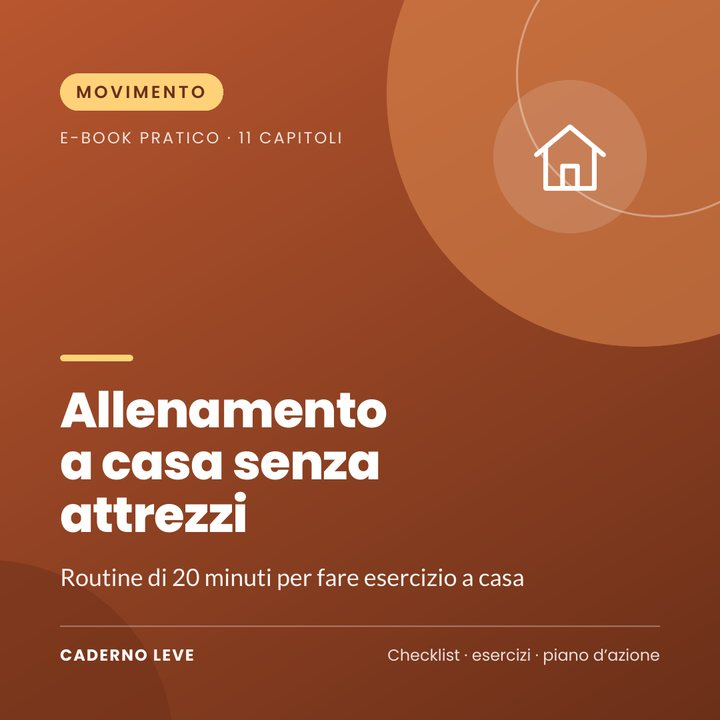

Allenamento a casa senza attrezzi
Routine di 20 minuti a corpo libero: esercizi spiegati con versioni facile e difficile, riscaldamento, 3 circuiti, piano di 4 settimane e consigli di sicurezza.
Questo e-book sarà acquistabile a breve.
Pagamento sicuro e consegna del PDF tramite Kiwify
Prezzo in real brasiliani (BRL). Al pagamento vedrai l’importo nella tua valuta.
Niente tempo o soldi per la palestra? Allenati a casa con routine di 20 minuti.
Allenamento a casa senza attrezzi è una guida pratica per chi vuole fare esercizio a casa, in sicurezza e senza comprare niente.
Imparerai gli esercizi di base, come adattarli al tuo livello, tre routine di 20 minuti e un piano di 4 settimane per creare l'abitudine.
Che cosa otterrai
- Esercizi con versioni facile e difficile
- Riscaldamento di 4 minuti
- 3 routine di 20 minuti
- Piano di 4 settimane
- Scheda di registro
Che cosa contiene
- Capitolo 1Perché allenarsi a casa funziona
- Capitolo 2Prima la sicurezza
- Capitolo 3Riscaldamento di 4 minuti
- Capitolo 4Esercizi per gambe e glutei
- Capitolo 5Esercizi per busto e braccia
- Capitolo 6Esercizi per addome e core
- Capitolo 7Le 3 routine di 20 minuti
- Capitolo 8Piano di 4 settimane
- Capitolo 9Allungamento e recupero
- Capitolo 10Costanza: il vero segreto
- Capitolo 11Esercizio in fasi particolari
- ExtraRiepilogo e piano d’azione per passare alla pratica
- ExtraScheda di lavoro e checklist da stampare
Per chi è
- Principianti
- Chi non ha tempo per la palestra
- Chi preferisce allenarsi in privato
Per chi non è
- Non sostituisce la visita medica
- Non è un programma dimagrante
Bonus: Scheda «Il mio allenamento a casa» — settimana e progressi.
Avvertenza importante
Questo e-book ha uno scopo informativo e offre suggerimenti generali di attività fisica. Non sostituisce una valutazione medica né il supporto di un professionista dell’esercizio fisico. Se hai problemi cardiaci, pressione alta, diabete, dolori, lesioni, sei in gravidanza o non fai attività fisica da molto tempo, parlane con un medico prima di iniziare. Fermati subito e chiedi aiuto se senti dolore al petto, capogiri, un fiato corto insolito o un dolore forte.